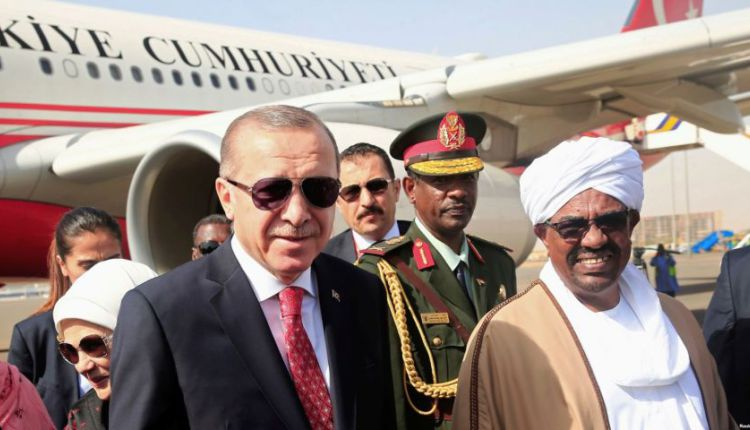
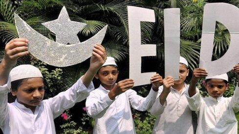
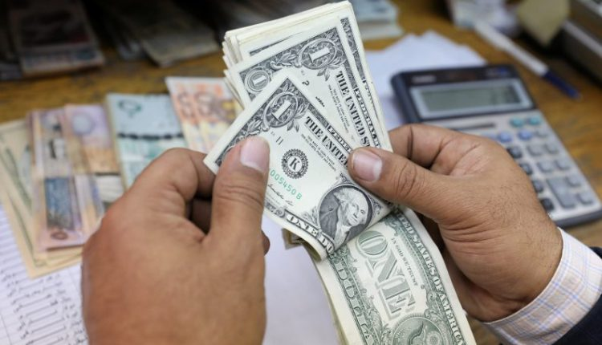
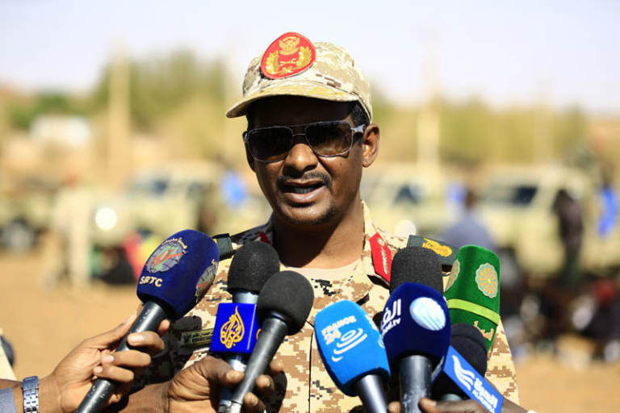

|  | |
|  |
العيد عن المسلمين : احكامه وآدابه إن العيد اسم لكل ما يُعتاد ويعود ويتكرر ، والأعياد شعارات توجد لدى كل الأمم سواء أكانت كتابية أم وثنية أم غير ذلك ، وذلك لأن إقامة الأعياد ترتبط بغريزة وجبلّة طبع الناس عليها فكل الناس يحبون أن تكون لهم مناسبات يحتفلون فيها ويتجمّعون ويُظهرون الفرح والسرور . تميز المسلمين بأعيادهم : لقد دلّ قوله صلى الله عليه وسلم : ” إن لكل قوم عيدا وهذا عيدنا ” على اختصاص المسلمين بهذين العيدين لا غير وأنه لا يحل للمسلمين أن يتشبهوا بالكفار والمشركين في شيء مما يختص بأعيادهم ، لا من طعام ولا من لباس ، ولا إيقاد نيران ولا عبادة ولا يمكّن الصبيان من اللعب في أعيادهم ، ولا إظهار الزينة ، ولا يسمح لصبيان المسلمين بمشاركة الكفار في أعيادهم |

|
العملاق محمد صلاح ينقذ لفربول سجل محمد صلاح هدف التعادل لفريق ليفربول في شباك كريستال بالاس، في المباراة التي تجمعهما حاليًا ضمن منافسات الجولة الـ 23 من عمر مسابقة الدوري الإنجليزي الممتاز، ففي الدقيقة 34 تقدم كريستال بالاس لتصبح النتيجة 1 – 0، ويعدله صلاح مع انطلاق الشوط الثاني ويسعى ليفربول للحفاظ على سجله الخالي من الهزائم على ملعب “أنفيلد” للمباراة الـ 32 على التوالي في مباراة اليوم، ويعد كريستال بالاس هو آخر فريق تمكن من تحقيق الفوز على ليفربول بملعب “أنفيلد” في مسابقة الدوري الإنجليزي، حيث لم يتذوق “الريدز” طعم الخسار |
|  |
ارتفاع اسعار الدولار في السودان توقع الدكتور حامد التجاني على الخبير اقتصادي والاستاذ بالجامعة الامريكية في القاهرة ان يصل سعر الدولار في السودان الى (800) او (900) جنيه بنهاية هذا العام مع اختفاء بعض السلع ذات الاسعار المرتفعة الان من الاسواق نتيجة للانتهيار الاقتصادي الذي ضرب البلاد وصعد بسعر الدولار الى(500) جنيه في السوق السوداء الاسبوع الماضي ووصف الدكتر حامد في مقابلة مع راديو دبنقا، المعاجات التي تقوم بها الحكومة لتخيف الغلاء وارتفاع الاسعار الذي ادى لتظاهرات في الخرطوم وبعض الولايات، وصفها بأنها غير ذات جدوى لاصابة الوضع بالسرطان الذي يصعب علاجه ولايفيد معه استخدام المهدئات سوى البتر المتمثل في اقتلاع نظام الؤتمر الوطني وحكومة البشير من السلطة. واكد ان الدولة الان (مفلسة ) |
|  |
الكشف عن كواليس الاتفاق بين المجلس العسكري وقوى التغيير توتر طفيف واتهامات متبادلة دون حدة أقرب للعتاب من كونها اتهام كل طرف للآخر ربما لأن الطرفين يقدران ظروف بعضهم البعض وللتحدي الذي يواجههما. وفد قوى الحرية والتغيير بدأ غاضبا جدا من الإعلام الرسمي سيما قناة السودان الفضائية – تلفزيون السودان – وفقا لما ذكره الدكتور إبراهيم الأمين حيث شكا من الإعلام لأعضاء وفد تفاوض المجلس العسكري واتهم عناصر من النظام البائد باستغلال الخلاف بين الجانبين لتمرير أجندتهم وتأجيج الصراع وقد وصل الأمر إلى نعت تجمع المهنيين (بتجمع الموهوميين ) |